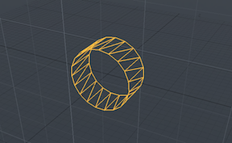

Item orb¶
Item_orb.cpp is a basic example plugin. This wiki page is intended as a walkthrough of the code in order to help you better understand the SDK.
Item_orb.cpp is a plugin that adds the orb item to modo’s toolkit.
Orb Item pictured above
Code Walkthrough¶
Class Declarations¶
We want this class to be able to write out to the log, so we inherit from FAQ#Q:_How_do_I_write_to_the_log.3F. This gives our class all the methods to write our to the log but adds a Luxology copyright. Inside the function, our main function is COrbLog, which sets the value of the string that we will output to the log.
class COrbLog : public CLxLuxologyLogMessage
{
public:
COrbLog () : CLxLuxologyLogMessage ("orb-item") { }
const char * GetFormat () { return "Orb Object"; }
};
This class contains all the functions needed to create an orb part to be used in rendering. We inherit from it in COrbElement, which is the class that actually creates the orb object.
class COrbPart
{
...
};
In order to display the orb in the viewport, we inherit from Tableau_(lx-tableau.hpp)#.2816.29_User_Class:_TableauSurface_method. We also need to inherit from COrbPart, as that is where the actual orb part is created.
We want our function to write out to the log, so we declare a COrbLog object inside our class.
The functions with the tsrf prefix are redeclarations of virtual functions inside ClxTableauSurface. They all set certain values related to the tableau surface element that will be used to create the orb element. The functions with the tins prefix set certain values related to the instance of the tableau surface element.
This class is later spawned as a server by a factory in the COrbPackage class, which is spawned as a server by the initialize method.
class COrbElement :
public CLxImpl_TableauSurface,
public CLxImpl_TableauInstance,
public COrbPart
{
COrbLog orb_log;
public:
CLxUser_TableauVertex vrt_desc;
float m_radius;
int m_resolution;
int f_pos[4];
LXtVector m_offset;
LXtMatrix m_xfrm;
LxResult tsrf_Bound (LXtTableauBox bbox) LXx_OVERRIDE;
unsigned tsrf_FeatureCount (LXtID4 type) LXx_OVERRIDE;
LxResult tsrf_FeatureByIndex (
LXtID4 type,
unsigned int index,
const char **name) LXx_OVERRIDE;
LxResult tsrf_SetVertex (ILxUnknownID vdesc) LXx_OVERRIDE;
LxResult tsrf_Sample (
const LXtTableauBox bbox,
float scale,
ILxUnknownID trisoup) LXx_OVERRIDE;
LxResult tins_Properties (
ILxUnknownID vecstack) LXx_OVERRIDE;
LxResult tins_GetTransform (
unsigned endPoint,
LXtVector offset,
LXtMatrix xfrm) LXx_OVERRIDE;
};
In order to create the item’s surface, we need to inherit from Surface_(lx-surface.hpp.
All of the functions with the surf prefix in this class are redeclarations of virtual functions declared in the CLxImpl_Surface class. When an instance of this class is created, these function will be run and they will set certain attributes of the surface we create to how we want.
class COrbItemSurface :
public CLxImpl_Surface
{
/*
* The parts of the orb side and endcaps)
*/
COrbPackage *src_pkg;
public:
LxResult surf_GetBBox (LXtBBox *bbox) LXx_OVERRIDE;
LxResult surf_FrontBBox (
const LXtVector pos,
const LXtVector dir,
LXtBBox *bbox) LXx_OVERRIDE;
LxResult surf_RayCast (
const LXtRayInfo *ray,
LXtRayHit *hit) LXx_OVERRIDE;
LxResult surf_BinCount (unsigned int *count) LXx_OVERRIDE;
LxResult surf_BinByIndex (
unsigned int index,
void **ppvObj) LXx_OVERRIDE;
LxResult surf_TagCount (
LXtID4 type,
unsigned int *count) LXx_OVERRIDE;
LxResult surf_TagByIndex (
LXtID4 type,
unsigned int index,
const char **stag) LXx_OVERRIDE;
LxResult Initialize (
COrbPackage *pkg,
CLxUser_Item &m_item,
CLxUser_ChannelRead &chanRead);
LxResult Initialize (
COrbPackage *pkg,
double radius);
};
We want this class to create an instance to put the orb into. In order to do that, we will need to implement the related package, so we inherit from CLxImpl_PackageInstance. Additionally, we will want to set the tags of the instance, so we inherit from Package_(lx-package.hpp)#.2825.29_SDK:_ILxPackageInstance_interface, which makes it so that channels update the preview.
All of the functions that we declare here are redeclarations of virtual functions originally declared in one of the headers above. All our redeclarations do is set it so that when tho instance is constructed certain values of the parts that make up the instance will be set how we want them. For example, we have our stag_Get set to return a custom string when want to set the string tag that the instance has. The pins prefix corresponds to functions that were redeclared from the PackageInstance class, stag StringTag, tsrc Tableau Source, and vitm ViewItem3D.
class COrbInstance :
public CLxImpl_PackageInstance,
public CLxImpl_StringTag,
public CLxImpl_TableauSource,
public CLxImpl_ViewItem3D
{
COrbLog orb_log;
public:
COrbPackage *src_pkg;
CLxUser_Item m_item;
ILxUnknownID inst_ifc;
LxResult pins_Initialize (
ILxUnknownID item,
ILxUnknownID super) LXx_OVERRIDE;
void pins_Cleanup (void) LXx_OVERRIDE;
LxResult pins_SynthName (char *buf, unsigned len) LXx_OVERRIDE;
unsigned pins_DupType (void) LXx_OVERRIDE;
LxResult pins_TestParent (ILxUnknownID item) LXx_OVERRIDE;
LxResult pins_Newborn (ILxUnknownID original) LXx_OVERRIDE;
LxResult pins_Loading (void) LXx_OVERRIDE;
LxResult pins_AfterLoad (void) LXx_OVERRIDE;
void pins_Doomed (void) LXx_OVERRIDE;
LxResult stag_Get (LXtID4 type, const char **tag) LXx_OVERRIDE;
LxResult tsrc_Elements (ILxUnknownID tblx) LXx_OVERRIDE;
LxResult tsrc_PreviewUpdate (
int chanIndex,
int *update) LXx_OVERRIDE;
LxResult vitm_Draw (
ILxUnknownID itemChanRead,
ILxUnknownID viewStrokeDraw,
int selectionFlags,
LXtVector itemColor) LXx_OVERRIDE;
LxResult vitm_HandleCount (
int *count) LXx_OVERRIDE;
LxResult vitm_HandleMotion (
int handleIndex,
int *motionType,
double *min,
double *max,
LXtVector plane,
LXtVector offset) LXx_OVERRIDE;
LxResult vitm_HandleChannel (
int handleIndex,
int *chanIndex) LXx_OVERRIDE;
LxResult vitm_HandleValueToPosition (
int handleIndex,
double *chanValue,
LXtVector position) LXx_OVERRIDE;
LxResult vitm_HandlePositionToValue (
int handleIndex,
LXtVector position,
double *chanValue) LXx_OVERRIDE;
};
We want to create a package for the orb item, so we have our class inherit from Package:_Server_basics.
Inside the class, we use Factory_Object to spawn servers, which are extensible set of features that we add to modo. The servers that we spawn create an orb object and the instance associated with it.
Attach is the most important function here. It takes the orb item instance that we have built and attaches it to the package.
The other functions with the pkg prefixes are redeclarations of functions inside the CLxImplPackage class. SetupChannels dictates which channels to have the package set up, and TestInterface sets up the test interface that we want.
The functions with the selevent prefixes would normally eavesdrop to see what we had selected, but here they don’t really do anything; they are just examples.
class COrbPackage :
public CLxImpl_Package,
public CLxImpl_SelectionListener
{
public:
static LXtTagInfoDesc descInfo[];
CLxPolymorph<COrbInstance> orb_factory;
CLxPolymorph<COrbElement> elt_factory;
COrbPackage ();
LxResult pkg_SetupChannels (
ILxUnknownID addChan) LXx_OVERRIDE;
LxResult pkg_TestInterface (const LXtGUID *guid) LXx_OVERRIDE;
LxResult pkg_Attach (void **ppvObj) LXx_OVERRIDE;
void selevent_Add (
LXtID4 type,
unsigned int subtType) LXx_OVERRIDE;
void selevent_Current (LXtID4 type) LXx_OVERRIDE;
};
./Server_Tags¶
Servers tags are examined when the server is initialized, and give information about the server. We set the tags in this case by taking a descinfo[] array and associating the relevant data with the corresponding flags.
These tags indicate that the class COrbPackage is a subtype of the super type locator and has the internal name of test-orb.
LXtTagInfoDesc COrbPackage::descInfo[] = {
{ LXsPKG_SUPERTYPE, "locator" },
{ LXsPKG_IS_MASK, "." },
{ LXsSRV_LOGSUBSYSTEM, "test-orb" },
{ 0 }
};
./Initialize_(index)¶
Servers are extensible set of features that we add to modo, usually through plugins. Intialize is called when we add the plugin to modo, and is the utility that exports the server.
This method indicates that we will be exporting one server that will be dependent on the COrbPackage class. All of the interfaces of the classes that it inherited will also be added and the server will have the name of test.orb.
This initialize method is fairly unusual, however, as inside the class that we create a server from there are factories that spawn other servers. We don’t export those servers, which create an orb element and its instance, as we attach them to the package, which we do export.
Further, the COrbElement class, which is one of the servers that we spawned with factories, built upon classes that we built in our header file, COrbPart and COrbLog.
void
initialize ()
{
CLxGenericPolymorph *srv;
srv = new CLxPolymorph<COrbPackage>;
srv->AddInterface (new CLxIfc_Package <COrbPackage>);
srv->AddInterface (new CLxIfc_StaticDesc <COrbPackage>);
srv->AddInterface (new CLxIfc_SelectionListener<COrbPackage>);
thisModule.AddServer ("test.orb", srv);
}
Implementations¶
These functions create a tableau surface element that lives in the tableau and generates geometry for the renderer. It has a bounding box, vertex features, and a sample method.
1 2 3 4 5 6 7 8 9 10 11 12 13 14 15 16 17 18 19 20 21 22 23 24 25 26 27 28 29 30 31 32 33 34 35 36 37 38 | LxResult
COrbElement::tsrf_Bound (
LXtTableauBox bbox)
{
...
}
unsigned
COrbElement::tsrf_FeatureCount (
LXtID4 type)
{
...
}
LxResult
COrbElement::tsrf_FeatureByIndex (
LXtID4 type,
unsigned index,
const char **name)
{
...
}
LxResult
COrbElement::tsrf_SetVertex (
ILxUnknownID vdesc)
{
...
}
LxResult
COrbElement::tsrf_Sample (
const LXtTableauBox bbox,
float scale,
ILxUnknownID trisoup)
{
...
}
|
The instance is the implementation of the item, and there will be one allocated for each item in the scene. The functions here all perform a function(generally made evident by their name) for the instance.
1 2 3 4 5 6 7 8 9 10 11 12 13 14 15 16 17 18 19 20 21 22 23 24 25 26 27 28 29 30 31 32 33 34 35 36 37 38 39 40 41 42 43 44 45 46 47 48 49 50 51 52 53 54 55 56 57 | LxResult
COrbInstance::pins_Initialize (
ILxUnknownID item,
ILxUnknownID super)
{
...
}
void
COrbInstance::pins_Cleanup (void)
{
...
}
LxResult
COrbInstance::pins_SynthName (
char *buf,
unsigned len)
{
...
}
unsigned
COrbInstance::pins_DupType (void)
{
...
}
LxResult
COrbInstance::pins_TestParent (
ILxUnknownID item)
{
...
}
LxResult
COrbInstance::pins_Newborn (ILxUnknownID original)
{
...
}
LxResult
COrbInstance::pins_Loading (void)
{
...
}
LxResult
COrbInstance::pins_AfterLoad (void)
{
...
}
void
COrbInstance::pins_Doomed (void)
{
}
|
The instance also presents a StringTag interface so it can pretend to have part and material tags for finding a shader.
1 2 3 4 5 6 7 | LxResult
COrbInstance::stag_Get (
LXtID4 type,
const char **tag)
{
...
}
|
The instance’s TableauSource interface allows it to place elements into the tableau, in this case our orb element.
LxResult
COrbInstance::tsrc_Elements (
ILxUnknownID tblx)
{
...
}
LxResult
COrbInstance::tsrc_PreviewUpdate (
int chanIndex,
int *update)
{
...
}
Based on the channel values, draw the abstract item representation using the stroke drawing interface.
LxResult
COrbInstance::vitm_Draw (
ILxUnknownID itemChanRead,
ILxUnknownID viewStrokeDraw,
int selectionFlags,
LXtVector itemColor)
{
...
}
LxResult
COrbInstance::vitm_HandleCount (
int *count)
{
...
}
LxResult
COrbInstance::vitm_HandleMotion (
int handleIndex,
int *motionType,
double *min,
double *max,
LXtVector plane,
LXtVector offset)
{
...
}
LxResult
COrbInstance::vitm_HandleChannel (
int handleIndex,
int *chanIndex)
{
...
}
LxResult
COrbInstance::vitm_HandleValueToPosition (
int handleIndex,
double *chanValue,
LXtVector position)
{
...
}
LxResult
COrbInstance::vitm_HandlePositionToValue (
int handleIndex,
LXtVector position,
double *chanValue)
{
...
}